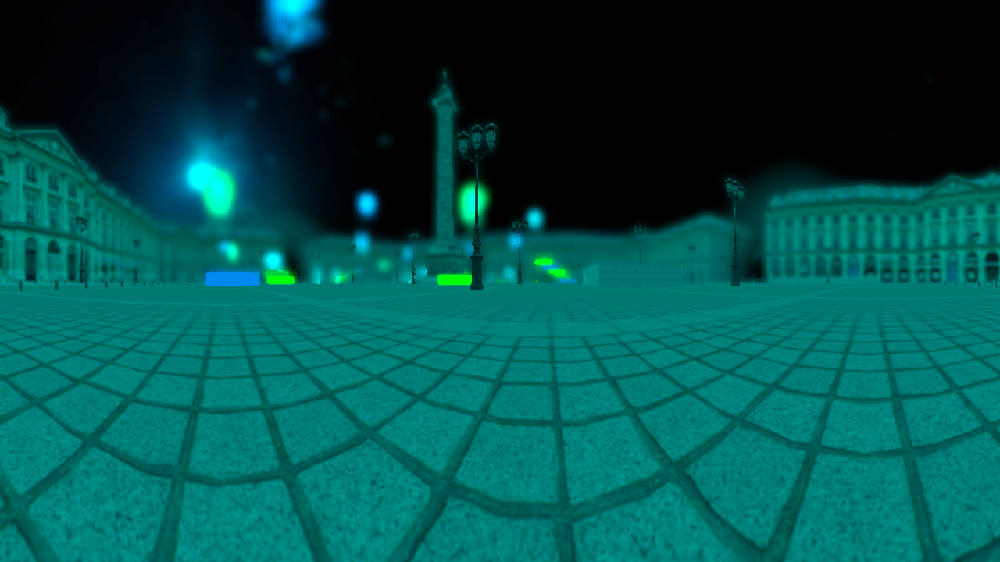
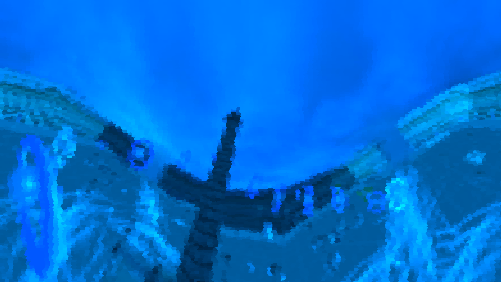
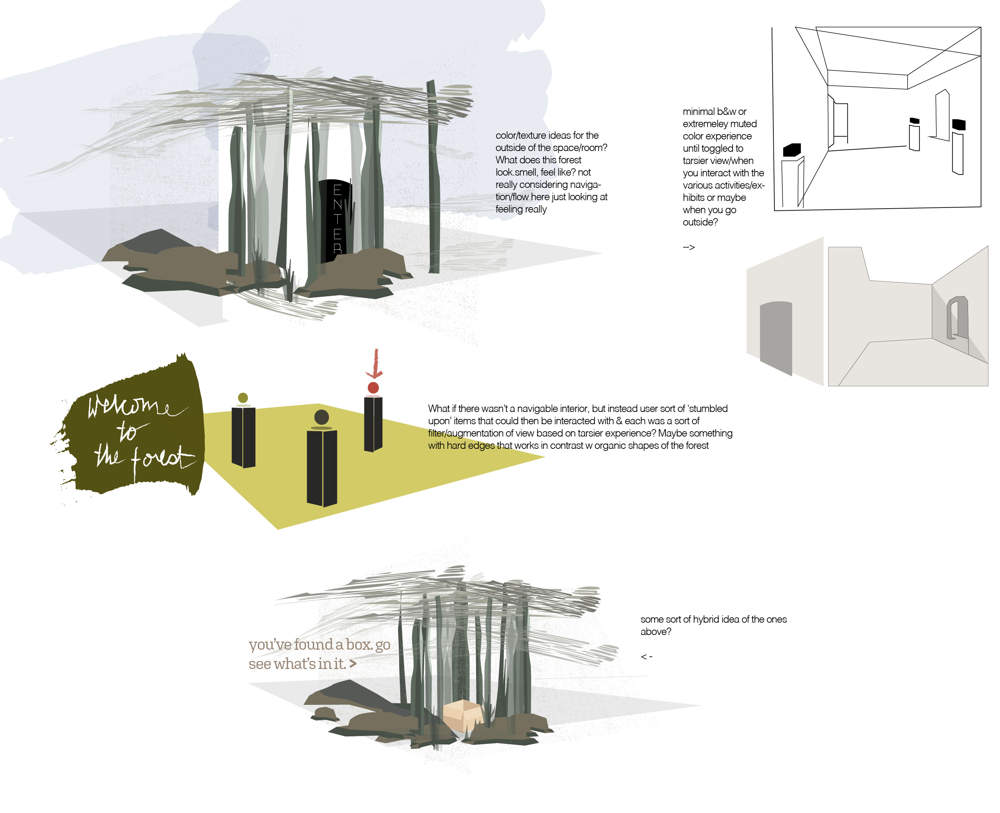

Project Overview
- 2018 Jan - Present
- Project Manager, Designer and Developer
Tarsiers are tennis ball-sized nocturnal primates with enormous eyes, both in absolute size and in proportion to the size of the animal. In fact, the relative eye size of tarsiers is unsurpassed by any vertebrate living or extinct. The Tarsier Goggles project aims to simulate such extraordinary optics through VR to provide an immersive experience for the audience to see how the way we view the world affect us and learn from an altered experience. The project is still in progress.
Problem and Solution
It is hard for humans to visualize/imagine the way animals view the world, as our way of perceiving the world is the only one we know. We can learn about optics, evolution through natural selection, and visual adaptations in the classroom setting, but we cannot yet appreciate how those adaptations function and affect the perceptual experience. What is it like to see as a tarsier, a primate with extremely specialized vision? How does the way we view the world affect us, and what can we learn from an altered experience?
Inspiration/Market Research
-
In the Eyes of the Animal (ITEOTA)
A project based in the UK that simulates the vision of animals such as mosquitoes, dragonflies, owls, and frogs artistically using VR and AR. ITEOTA is more focused on seeing natural habitat in the animals’ views and does not engage the user with exploring how specific visual components have evolved or how they differ from and influence the human experience. In addition, their solution is less accessible to the public as it involved an exhibition within the woods. Also, as tarsiers are animals with significant differences in optics due to visual adaptations, it will be meaningful to portray those specific adaptations, such as a wider field of view.


-
All Eyes on Paris
A 3D experience that allows users to see Paris in the eyes of animals such as dogs, cats, rats, and hawks. It incorporates how the field of vision and the eyes' position relative to the head affects the way space is shaped. It is not a Virtual Reality application, but a 3D game in the perspective of an animal. As it involves a lot of action, it causes discomfort and motion sickness. However, it includes interactive elements.
  -
More on InVision
- User Personas: Eliza Nelson (the museum lover), Becky Barrett (the high school student), Ahmet Eksioglu (the high school teacher)
Features and Adjectives
- Tarsier Vision Mode that shows red-green blindness, a different depth of field, a wider field of view, and its brightness compensation. Tarsier Vision Mode is toggleable.
- General Room that represents an abstract human environment (an exhibition). The room is to hold portals to the mini stations.
- Forest Environment that represents a natural environment. It will include a feature where the user can leap from tree to tree like a Tarsier.
- Mini Stations are separate environments that emphasizes each aspect of the Tarsier Vision Mode. For instance, the brightness compensation station is a dark room that can only be navigated in the Tarsier's brighter vision.
- Adjectives: wonder, inspiring, interesting, visually stimulating
- For more details visit, Feature Specs Google Doc
Paper Sketches and User Testing
- Concept sketch based on brainstormed idea



- User flow paper sketch
- Struggles: first time designing for VR. not sure how to create a mockup and user flow diagram. decided to use storyboards and show each key scenes of the VR experience
- was still difficult to conduct user testing
- some bias because we had to explain some context behind the design
- tested on 5 different users
- feedback: confusing to show tarsier vision toggles with eyeballs, the explanations on screen can be somewhat distracting and hard to read
- overall structure of the user flow, having general room and mini stations were intuitive
High Resolution Mockups...?
- instead just made sketches of all the models to scale
- created color palette
- dived into modeling without any further prior preparation
- adjusted model as we tested them every single time in VR because seeing on screen and seeing in VR looked very different
So Far...
- model of general room
- model of tree
- currently have a general room connected to other stations
- Github Repository
Future
- possible exhibition at VINS, Montshire
- add in more stations
- add in loading scene and tutorial
Tools
- Product Management: Zenhub with Github, Slack
- Design: InVision, Maya
- Developing: Unity, SteamVR, C# Scripting, and VRTK
Struggles and Lessons
- communication is key and negotiation between partner
- how do i make grayscales, highres mockups for virtual reality?
- work pipeline for vr?? should model first? should design first? what should developers start developing?
- always make a reservation for team lunches